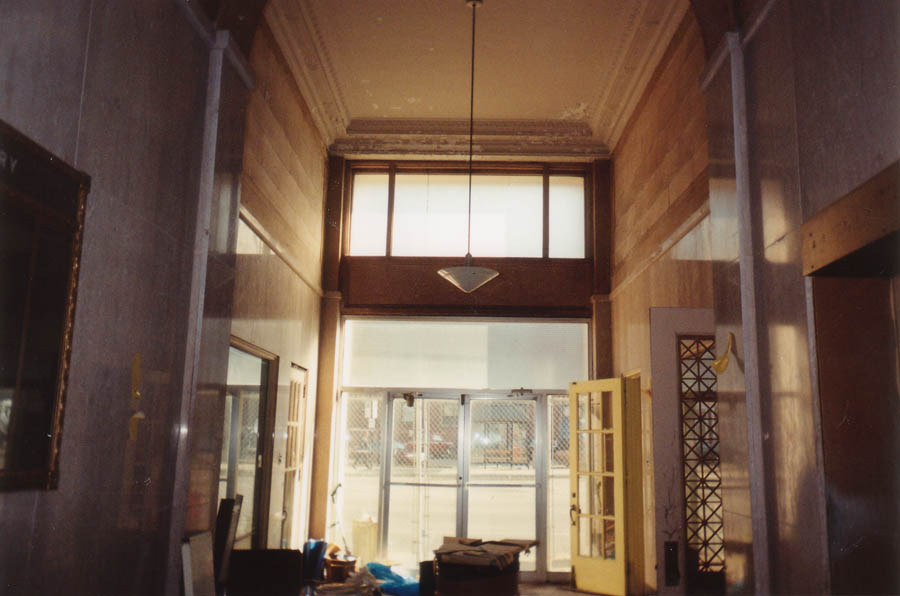
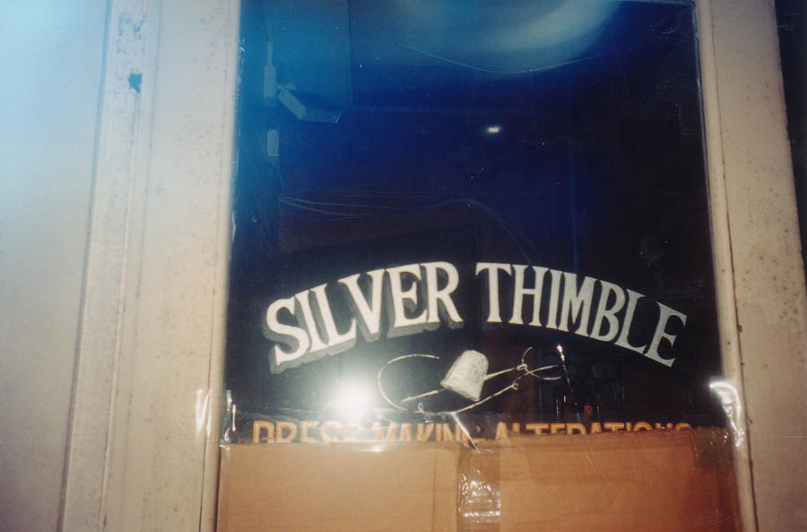
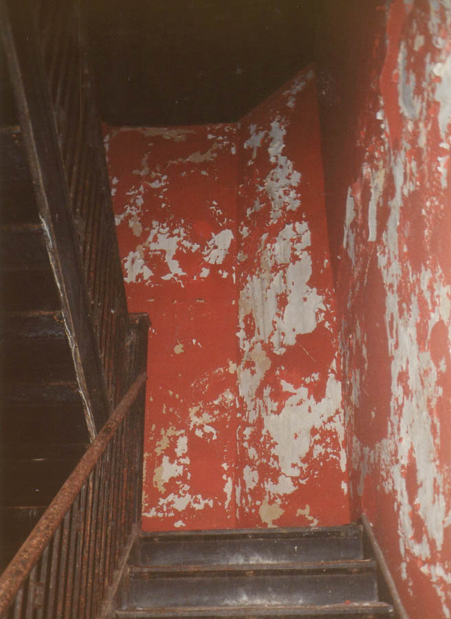

Inside The Tecumseh Building

The first floor of the Tecumseh Building has a high ceiling to go along with the glass-fronted foyer. There was a lot of construction junk on the floor when we were there. It was apparently an office building which housed lots of different businesses. One of the first we came across was an old tailor shop.

Although each floor was fairly small in size, the number of floors made this one of the largest buildings I've been through, and definitely the tallest; at twelve stories it beats the ten-floor Seneca Hotel. It's listed on the National Register of Historic Places, and was apparently a big deal when it was built almost a century ago. To continue to the upper floors and see what's left of some of Springfield's old businesses, click below.

To the Upper Floors
Back